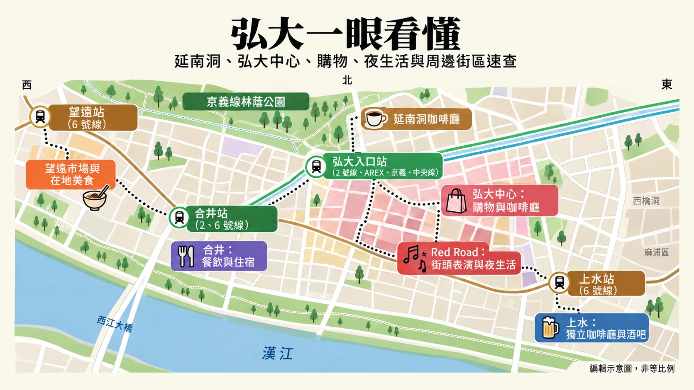

弘大旅遊指南 2026
把弘大當成一個可以慢慢走的街區，而不是景點清單，行程會更順。從延南或較熱鬧的弘大核心區開始，再把購物、美食、表演，以及你真正想要的夜晚串起來。

旅客為什麼會選弘大
還沒抵達前，很容易誤解弘大。
有人以為這裡只有夜店、喝酒與學生；也有人只把它看成「有機場鐵路直達的首爾街區」。兩種說法都沒錯，卻都沒說清楚弘大為什麼對旅客有用。
當幾個小需求重疊在一起，弘大的好處就出現了。
你可以在延南散步一個下午，隨興喝咖啡或逛店，再走進熱鬧街道吃晚餐，飯後仍有不少選擇。街頭表演、現場音樂、唱歌、自助四格拍貼機、深夜咖啡廳與購物，讓白天主要景點逛完後，這一區仍有事可做。
如果住在這裡，這點更重要。
宮殿或博物館可能讓你專程去一次；弘大則能讓好幾個夜晚都有去處，不必每晚重新排一份完整行程。你可以認真逛一個下午，之後兩晚從首爾市中心回來，再用不同方式享受街區。
機場交通是吸引力之一，但不該單靠這點決定住宿。若你多數早晨都要早起前往鍾路、宮殿與市中心，晚上也習慣早早結束，弘大的優勢就少了些。這時安排一個下午加晚上來逛，可能比住在這裡更合理。
真正會利用晚餐後的時間，弘大才更值得住。
差別就在這裡。

從哪裡開始：3 號出口還是 9 號出口？
想輕鬆入門，從 3 號出口開始
第一次到訪，Korea Inside 的預設建議是從 3 號出口附近的延南側開始。
這樣能先把京義線林蔭道放進路線，不會一出站就掉進最熱鬧的商業街。先走走、看看小巷，想喝咖啡就停一下，等下午稍晚再往弘大核心區移動。
這樣尤其適合情侶、獨旅、喜歡咖啡廳的旅客，以及不確定自己是否喜歡弘大喧鬧一面的人。
這不是避開弘大。
而是換個更順的順序認識它。

照片：Korea Tourism Organization / Lee Beom-su
為了熱鬧而來，就從 9 號出口開始
若重點是 Red Road、購物、角色商品、K-pop 周邊，或市中心般的熱鬧街景，9 號出口更直接。
Red Road 的 R1 Red Culture Market 區段，距離弘大入口站 9 號出口約 220 公尺。整條 Red Road 以不同主題區段延伸約 2 公里，適合把它當成一片可沿路探索的區域，而不是單一景點定位。
如果你到得較晚，沒有時間先逛延南，這裡也是比較合適的起點。
實際安排方式
下午抵達，有時間慢慢逛：
3 號出口 → 延南 → 京義線林蔭道 → 弘大核心區 → 晚餐 → Red Road
時間較短，以購物或晚間活動為主：
9 號出口 → 弘大核心區／Red Road → 晚餐 → 街頭表演或當晚已安排的活動
地圖上看，差別似乎很小。
但真正走在街區裡，會是很不同的一天。
先逛延南：待多久再往弘大走
弘大入口站 3 號出口 → 京義線林蔭道 → 延南巷弄 → 一間咖啡廳 → 弘大核心區
3 號出口讓你先接觸街區較安靜的一側。
京義線林蔭道起點距離 3 號出口約 450 公尺。整座公園長 6.3 公里，橫跨首爾多個區域，但規劃弘大行程時，這個總長度其實用不上。你不是來走完整座公園的。
第一次到訪，逛延南這一段就夠了。

照片：Korea Tourism Organization / Lee Beom-su
不必把林蔭道走成長途健行
把公園當成下午的開場，比當作主要景點更合適。
沿著公園走一段，看看兩旁的街區如何展開，遇到有意思的小巷就離開主步道。咖啡廳、麵包店、小餐館與商店都在綠帶之外；一直待在公園裡，反而可能錯過延南本身。
對多數第一次到訪的旅客，實際在公園走 20 到 30 分鐘，再轉進周邊街道就很足夠。
天氣好、喜歡慢慢散步，可以多待一些。
如果很熱、下雨，或早上已經走了不少景點，就縮短一點。
重點不是走多遠。
而是不用一開始就從最擁擠的街道展開弘大的下午。
讓咖啡廳成為路上的休息
延南咖啡廳很多，為了找到唯一「最好」的一間，花的心力可能比喝咖啡本身還多。
除非某間咖啡廳本來就是此行目的，否則先走走，在街區逛過一陣子再決定在哪裡停。
這樣一次解決兩件事。
你能先看看延南再坐下來，咖啡廳也成為進入熱鬧行程前真正的休息，而不是另一個需要繞路的目的地。
第一次逛弘大，咖啡廳停留 45 到 60 分鐘通常就足夠。
如果咖啡廳是你這趟首爾旅行的重點，就不用照這個時間，留給延南更多空間。這時逛咖啡街本身就是活動，不只是休息。

照片：Korea Tourism Organization / Lee Beom-su
大致留給延南兩到兩個半小時
一般第一次到訪，可以先抓這個範圍：
公園散步＋小巷探索＋一間咖啡廳＝約兩到兩個半小時
這不是預約時間表。
只是幫你掌握節奏。
沒有大致範圍，延南很容易悄悄占滿整個下午。這可能正合你意，但也會壓縮弘大入夜前變化最明顯那一側的時間。
如果大約下午 2 或 3 點開始，照這樣的節奏，傍晚前就會自然往弘大核心區移動。
這比中午就走進最熱鬧的街道，等著弘大變成網路照片裡的樣子，更容易銜接。
什麼時候該往下一區走
不會有哪個地標告訴你，延南已經逛完了。
喝完咖啡休息、開始覺得街道有些重複，或準備好要購物吃飯，這三種情況有一種出現，就可以往下一區。
往弘大入口站方向走，再接到弘大核心區。
你會明顯感覺到變化。
街道更熱鬧，購物成了重點。K-pop 與角色商品、自助拍貼機、美妝店及短期快閃店，會占去更多注意力。
這種節奏變化，正是把兩區放在一起逛，比各自單逛更好的原因。
延南讓下午保有從容。
弘大核心區則讓行程熱鬧起來。
實際可行的下午安排
想用時間來抓個方向，可以從下面這個例子開始，不必把它當成硬性時刻表：
下午 2:00–2:15 — 從 3 號出口出站，先辨認方向
下午 2:15–2:45 — 京義線林蔭道
下午 2:45–3:30 — 延南巷弄
下午 3:30–4:30 — 到咖啡廳或麵包店休息
約下午 4:30–5:00 — 開始往弘大核心區移動
下午 5:00 之後 — 購物、快閃店與更熱鬧的街景
晚餐開始 — Red Road、街頭表演，或你真正想要的夜晚
比這個時間早或晚一小時，都不用擔心。
重要的是順序。
先慢下來，再走進熱鬧。
弘大核心區：照興趣逛，不必比逛了幾間店
延南 → 決定購物重點 → 有興趣就逛一間快閃店或拍貼機 → 晚餐 → Red Road
從延南走出來，進到弘大核心區，會像有人突然把音量轉大。
街道更忙碌，店面爭相吸引目光，很容易接下來兩小時只是看別人走進哪裡，就跟著進去。
不必這樣開始。
開始購物前，先想清楚自己真正想找什麼。
先選 K-pop 還是時尚購物
若重點是 K-pop、角色商品或專輯，就挑一間車站附近的店作為起點。
AK Plaza 裡的 WITHMUU 目前販售官方專輯、周邊與手燈，也有小型體驗內容。靠近 1 號出口的 K-Pop Square Hongdae，則是結合周邊商品、展覽與輪替快閃活動的 K-pop 專門空間。
不必因為兩間都在，就兩間都去。
哪間有你在意的藝人、角色或活動，就從那裡開始；兩間都沒有，就繼續往前逛。
想逛服飾與美妝，可往 9 號出口附近的 R3 區走。這是弘大時尚購物較密集的區域之一，服飾、彩妝與潮流店鋪集中在這一帶。
留一段購物時間，比列出必逛店家清單更實用。
約 60 到 90 分鐘，對還想吃晚餐、感受弘大夜晚的旅客，是第一輪購物可以參考的長度。
若購物是你來首爾的主要原因之一，就多逛些。
若不是，在行程只剩購物袋之前，就可以離開。
快閃店是期間限定，不是保證一直存在的景點
弘大快閃活動值得查一下，因為不同日期來，能逛的內容會不一樣。
它們也最容易讓舊旅遊指南過時。
幾個月前看到的 K-pop、角色、時尚或聯名活動，可能早已結束。其他活動則可能需要事先預約、當日候位或分時入場。例如，2026 年一場 K-Pop Square 活動，就把事前預約入場與之後的現場候位分開。
所以，不要把長期通用的行程綁在某一間快閃店上。
可以採用這個原則：
出發前不久確認當期活動，只加入你本來就有興趣的一項。
若你是該藝人或作品角色的粉絲，挪出一小時可能值得。
若不是，為限量商品排長隊，未必比逛弘大街區本身更值得。
網路爆紅的隊伍，不會自動變成值得去的景點。
順路遇到喜歡的拍貼機再拍
弘大、延南、上水與合井都有不少四格拍貼機，不必為了隨便一間特地橫跨整個街區。
2026 年，大弘大區域有數十間 Life4Cuts、Photoism、Haru Film、Photogray 與其他拍照品牌的分店。
多數旅客最實際的做法很簡單。
看到喜歡的店，看看相框或背景，想拍就進去。
如果特別在意某款 K-pop 聯名相框，先查參與活動的品牌或分店。除此之外，就把拍照當作購物途中一段 10 到 20 分鐘的休息，不用把它排成另一個需要研究地鐵路線的目的地。
朋友或情侶一起拍尤其有趣，因為在幾乎什麼都留在手機裡的一天，最後能帶走一張實體照片。
獨旅也不必跳過。拍貼機可自行操作，重點是你想不想要這張照片，不是有沒有一群人同行。
別讓購物袋決定你的夜晚
這個問題往往比想像中更快出現。
專輯、角色商品、美妝與衣服，一次買一件很容易。逛過幾間店後，晚餐、街頭表演與原本安排的夜間活動，就都得提著這些戰利品。
如果住在弘大，飯店也不算遠，晚上活動前繞回去放東西，可能值得。
若從其他區域過來，就替購物設個收尾時間。
別因為下一間可能更好逛而一直買，等到真正想看的晚間活動還沒開始，就已經逛累了。
購物應該讓這一天更豐富。
而不是提早結束它。

照片：Unsplash / patrick
開始夜間活動前，先吃晚餐
若依照延南路線，大約下午 5 點走到弘大核心區，可以這樣銜接：
下午 5:00–6:15 — 服飾、K-pop、角色商品或美妝購物
可再留 15–30 分鐘 — 快閃店或拍貼機
約傍晚 6:30–8:00 — 晚餐
晚餐後 — Red Road、街頭表演、現場音樂、唱歌、酒吧或深夜咖啡廳
再提醒一次，這不是預約時間表。
只是讓弘大的購物行程不至於吞掉整個夜晚。
走路途中遇到更有意思的東西，也可以改變計畫。
能保留這種彈性，本來就是值得在這裡花時間的原因之一。
弘大附近吃什麼：讓這一餐符合當天行程
望遠探索美食 → 延南喝咖啡休息 → 弘大核心區吃晚餐 → 宵夜保留彈性
弘大餐廳很多，決定吃哪裡，很容易又變成另一份過度安排的行程。
不必從名店清單開始。
先想這一餐的用途。
午餐、咖啡休息、與朋友的晚餐，以及深夜表演後想吃點東西，解決的是不同需求，不該用同一方式安排。
午餐本身也是體驗時，安排望遠
想試好幾種韓國食物，而不是坐下來吃一大餐，望遠市場比較適合當午餐停靠點，不是晚餐後匆匆繞去一下。
在那裡吃，分享比較好安排。
韓式甜辣炸雞、可樂餅、烤肉餅與小份市場點心，讓情侶或一群人不必立刻選定一家餐廳，就能試到好幾樣。
別在剛到的前五分鐘，就把看起來好吃的全買了。
先買一兩樣，再往市場裡走，之後再看還餓不餓。
聽起來很簡單，但第一份炸物、甜飲和杯裝炸雞，很容易就已經成了一頓午餐。
天氣舒服時，也可以外帶，接著往望遠漢江公園走。
若下雨、酷熱，或同行的人已經累了，就把市場當終點，不必再去河邊。
望遠的好處，是吃東西本身就能成為活動。
不需要把它變成名攤打卡清單。
延南咖啡廳與午餐分開安排
若依照前面的延南路線，咖啡廳主要是休息。
除非咖啡廳是你來首爾的主要目的之一，否則照這個角色安排就好。
吃完豐盛午餐立刻再去吃一大份咖啡廳甜點，可能還沒走到弘大核心區，整個下午就慢了下來。
對許多旅客，一杯咖啡、一份麵包點心，或合吃一份甜點就夠了。
晚點還能再吃。
弘大不是難找下一餐的地方。
情侶與多人同行，把晚餐當作晚上的重點
在弘大核心區，晚餐適合成為夜晚的一部分，不必硬塞在逛店的空檔。
情侶或多人同行，韓式烤肉與辣炒雞排尤其合適，因為可以分享，也自然會花些時間。
想隨興一點，或晚間活動比晚餐本身更重要時，炸雞也好安排。
選哪一種，要看接下來準備做什麼。
想逛 Red Road、看街頭表演或聽現場音樂，就不必只因餐廳上了熱門清單，而橫跨街區去吃。
在你飯後打算活動的弘大區域附近吃，會比較順。
餐廳再好，也可能不適合當天路線。

照片：Unsplash / suzi-kim
獨旅者坐下前，先確認點餐規定
弘大有很多適合一個人吃的東西。
難處不是一個人用餐。
而是選了店家預期要多人分享的料理。
韓式烤肉、辣炒雞排、烤腸等烤盤或鍋物料理，即使菜單標的是單份價格，也可能有最低點餐份量。有些店只要點滿最低份量就接受單人，有些則可能不接待一人一桌，忙碌時尤其如此。
坐定前先問清楚。
若不適合一個人吃，換一家就好，不必當成美食任務失敗。
單人份餐點就好安排得多。
湯品、鍋物、麵食、飯類、紫菜飯捲，以及其他單碗或一人份套餐，通常更自然地融入獨旅行程。
如果吃烤肉本身很重要，就特別找接受單人用餐的店，不要假設弘大每一間烤肉店都可以。
目的是好好吃一餐。
不是與最低點餐規定爭個輸贏。
別把整趟首爾的餐費都花在弘大
弘大方便，但不代表首爾每一餐都要回這裡吃。
住在這一區，可以把便利留給早餐、臨時決定的晚餐，或從市區其他地方回來後的宵夜。
其他餐留給你本來就會去的地方。
逛宮殿與鍾路的一天，就能在鍾路吃。
晚上在乙支路活動，就留在乙支路。
安排望遠的一天，就在望遠吃。
如果只是因為收藏的餐廳都在飯店旁，就橫跨首爾回弘大吃飯，反而浪費了行程分布全市的好處。
飯店所在街區，應該讓吃飯更容易。
而不是決定你的每一餐。
宵夜留到晚點再決定
這是一整天裡不太需要事先規劃的部分。
若因課程、表演或其他固定時間的活動而提早吃晚餐，活動結束後再看看自己是否真的餓了。
炸雞、麵、一份簡單宵夜、甜點、便利商店食物，或乾脆不吃，都可以。
別只因弘大熱鬧到很晚，就排晚上 10:30 再吃第二家名店。
你可能會餓。
也可能已經累了，手上還提著三個購物袋。
把選擇留給當時的自己。
弘大一日行程的實用用餐節奏
若下午到晚上都以弘大為主，可以這樣安排：
先在別區吃午餐，或簡單吃一點
→ 下午到延南咖啡廳
→ 傍晚前後在弘大核心區吃晚餐
→ Red Road／現場音樂／唱歌／酒吧
→ 仍想吃，再安排宵夜
弘大加望遠的一整天，則調整前半段：
望遠市場午餐
→ 逛望遠，天氣允許再到河邊
→ 合井或上水
→ 弘大核心區
→ 晚一點吃晚餐，或晚上吃得輕一些
不要只因都在首爾西側，就把兩條路線硬塞進同一天。
好的美食安排，會讓你在對的時候有胃口。
弘大付費體驗：真的能讓這一天不同，再預約
K-pop 舞蹈／調香／戒指製作／其他手作課 → 選一項興趣 → 預約時間 → 圍繞它安排弘大其他行程
弘大可預約的活動很多，很容易把原本有彈性的街區散步，排成一張預約時間表。
不必這麼做。
付費體驗若能帶來光靠散步、購物或吃飯得不到的內容，就值得在行程裡留個位置。
多數第一次到訪的旅客，預約一項活動就夠了。
想親自參與 K-pop，而不只是看表演，舞蹈課就值得考慮
若 K-pop 是你來首爾的原因之一，比起再花一小時買周邊，舞蹈課更有明確的體驗價值。
目前弘大有約 90 分鐘、以英文帶領的課程，分小團與私人形式。有些明確歡迎初學者，所以不一定需要舞蹈經驗。
真正要問的是，你想不想自己學這段編舞。
如果想，就把課程當成下午的固定重點。
不要先逛三小時，才帶著疲憊去參加自己付費的活動。
簡單的安排會更順：
延南或午餐 → 舞蹈課 → 短暫休息 → 弘大核心區購物 → 晚餐 → 夜間活動
課程若較晚，就把購物與上課順序對調。
固定預約應決定彈性行程怎麼排，而不是反過來。
團體課或私人課，各有適合的理由
想參加活動，又不需要付費安排完全客製的內容，併團課程就合理。
獨旅者也適合，因為不必自帶一群同伴。
特別在意曲目、想和朋友一起學，或程度與自信差異會讓團體課不自在時，私人課更有幫助。
目前產品顯示，私人方案可能可選歌，併團課則採用排定的編舞。
別只因「私人」聽起來較好，就多付錢。
客製內容真的會改變體驗，再為它付費。
想安靜地在室內待一小時，可以考慮調香
弘大的活動不一定都要有音樂和人潮。
目前弘大調香課從引導式調配到較自主的形式都有，通常約一小時到 90 分鐘。現有多項方案提供英文協助。
尤其適合：
想放慢步調的情侶、
喜歡有安排的室內活動的獨旅者、
或不太適合散步、看街頭表演的雨天下午。
預約的理由，不是調香屬於「來韓國必做體驗」。
而是你想用旅途的一段時間，親手做一樣能帶回家的東西。
對香氛沒興趣，就跳過。
戒指製作，比預約頁面看起來更需要時間
製作戒指，聽起來像可以順便加進行程的小活動。
通常並不是。
目前弘大的銀戒體驗可能花約兩小時，包含挑設計、量尺寸、塑形、修整，以及可選的刻字或鑲石。
因此它更接近下午的主要活動，不是快速的購物休息。
情侶、朋友，或特別想要手作紀念品的人，安排起來很自然。
但不適合硬塞進已很擁擠的半日行程。
預約兩小時的手作課，就拿掉另一項安排。
不要只往上加。
付款前確認五件事
預約課程或工作坊前，確認：
所需時間
90 分鐘的活動，加上抵達、報到與前往下一站，實際可能占用接近兩小時。
使用語言
別以為首爾的活動一定以英文進行。目前弘大方案有英文帶領，也有多語影片引導等不同形式。
團體或私人課程
弄清楚是和其他旅客一起參加，還是整場只為你的同行者保留。
年齡與參加規定
例如目前有些舞蹈產品接受七歲起兒童，但要確認你選的特定方案，不能推論每堂課都適用。
取消與抵達規定
活動若排在忙碌的首爾行程中間，這些條件可能比小幅價差更重要。
先看清楚條件，再圍繞預約安排整天。
別只為讓行程看起來更滿，就預約體驗
弘大本來就有很多不用買票也能做的事。
走延南、逛弘大核心區、吃飯、看看快閃店、欣賞街頭表演，或坐咖啡廳，就能輕鬆填滿一個下午與夜晚。
付費活動應取代其中一部分時間。
而不是全部疊上去。
現有課程或工作坊若沒有你真想做的事，就不花這筆錢，讓當天保有彈性。
預約活動放在哪裡
第一次到訪，想參加一項體驗，可以這樣排：
方案 A — 以 K-pop 為主
延南
→ K-pop 舞蹈課
→ 弘大核心區購物
→ 晚餐
→ Red Road／晚間活動
方案 B — 情侶／手作為主
延南
→ 咖啡廳
→ 戒指或調香工作坊
→ 晚餐
→ 街頭表演／現場音樂／深夜咖啡廳
方案 C — 雨天
室內購物
→ 工作坊或舞蹈課
→ 晚餐
→ 唱歌／咖啡廳
挑一種真的符合你在意的體驗、能讓這一天不同的安排。
再預約那一項就好。
弘大晚餐後：想把夜晚延續到什麼程度
晚餐 → 看看 Red Road → 選街頭表演、現場音樂、唱歌或酒吧 → 還想玩，再繼續
弘大不會一吃完晚餐，就突然只剩夜店。
改變的是選擇變多了。
可以站在戶外看表演、再喝杯咖啡、聽現場音樂、唱歌、去酒吧，或一直玩到更晚。沒有哪一項是「正確弘大之夜」的必備條件。
所以，晚餐後真正有用的問題不是：
「夜生活在哪裡？」
而是：
「我今晚還想再玩多久？」

照片：Unsplash / daesun-kim
決定進哪家店前，先在戶外走走
天氣還不錯，就從 Red Road 開始。
這樣夜晚前半段仍有彈性。
R2 區是一條既有的街頭表演街，不是單一舞台。登記的演出可能有音樂、舞蹈、魔術與默劇。
不用買票，也不必抵達前就決定好要看什麼。
先走走。
有吸引你的表演，就停下來。
沒有，就繼續往前。
這是很容易感受弘大夜晚、又不必把剩下時間都投入夜生活的方式之一。
街頭表演要查當期資訊，別當成固定場次
不要因為看見下面這樣一句話，就安排整趟首爾行程：
「弘大街頭表演每晚 8 點開始。」
Red Road 會公布附日期的時程，表演區域與樂團也會變動。天氣和營運狀況，同樣可能影響節目。
實際做法很簡單：
造訪前不久，確認 Red Road 官方時程。
有你真的想看的樂團或演出，就配合它安排晚餐。
沒有的話，不必只因旅遊指南說街頭表演是必體驗，就原地等一小時。
街道還是在那裡。
你的夜晚可以有其他去處。
表演本身很重要，就選現場音樂
現場音樂與街頭表演，是不同的選擇。
街頭表演的好處，是散步途中能偶然遇見。
正式演出場地值得多做些安排，因為可能要買票、有固定開演時間，而且台上的藝人未必是你有興趣的。
例如 KT&G Sangsangmadang Hongdae 設有專用演出廳，2026 年仍持續舉辦演唱會與音樂活動。
但這不代表一定要去。
先看當期節目。
藝人或音樂類型有興趣，再以演出為晚上的重點。
沒興趣，就不必只為了說自己體驗過弘大獨立音樂場景而進去。
音樂本身應該是理由。
飯後想再玩一下，又不想投入夜店酒吧，唱歌最容易安排
朋友、情侶與部分家庭，晚餐後去唱歌可能是最簡單的選擇。
不必熟悉當地音樂圈、找對夜店，也不用玩到深夜。
想待多久、唱什麼，由你們決定，大家唱夠了就離開。
在首爾走了一整天後，這種彈性很重要。
如果晚上 10 點大家都累了，就回飯店。
若同行的人突然又有精神，唱歌能讓夜晚多延續一小時，不必再排第二份行程。
想感受弘大熱鬧、但對喝酒或夜店沒興趣的旅客，尤其好安排。
不喝酒，也能享受弘大的夜晚
很多簡短弘大指南，在這點上容易說錯。
夜生活不等於喝酒。
一個晚上可以是：
晚餐 → Red Road → 拍貼機 → 甜點或咖啡廳 → 飯店
或是：
晚餐 → 街頭表演 → 現場音樂 → 飯店
或是：
晚餐 → 唱歌 → 宵夜 → 飯店
帶青少年同行的家庭、不喝酒的情侶，或不想進夜店的獨旅者，仍能享受弘大晚餐後最有意思的那一面。
不必參與這個街區的每一種玩法。
夜店與酒吧串遊，適合更明確的需求
夜店若真是此行重點，就為它安排。
但不要只因為地點在弘大，就把夜店當成預設推薦。
獨旅者若明確想要社交的夜晚，又不想一個人挑酒吧和夜店，參加有帶領的酒吧串遊可能合理。
以下旅客就比較不適合：
不喝酒的人、
不喜歡跟團夜生活的人、
家庭、
或理想夜晚以音樂、美食或咖啡廳收尾的人。
住在弘大，會讓這個決定不同
這是住在這一區最有力的理由之一。
飯店若在附近，就不用晚上 7 點先決定整晚要玩到多晚。
可以先吃飯、看一段表演，之後再決定要不要多待一小時。
若要返回明洞、鍾路或首爾其他區域，考量就不同。
到了某個時間，回程本身就成了晚間安排的一部分。
這不代表從其他區域來弘大很困難。
只是應該知道自己想何時離開，別以為回程到時候自然就能解決。
第一次逛弘大，實際可行的夜晚
若下午已在延南和弘大核心區度過：
約傍晚 6:30–8:00 — 晚餐
晚餐後 — 走走 Red Road，看看當晚實際有哪些活動
然後選一項：
街頭表演
留在戶外，讓夜晚保有彈性。
現場音樂
有值得花時間或買票的特定演出，再前往。
唱歌
同行的人想再玩一項活動，但不想去夜店時，就很好用。
酒吧或夜店
因為你想要這樣的夜晚而選，不是因為覺得來弘大就應該去。
如果吃完晚餐就滿足了呢？
回飯店就好。
這樣也沒有錯過弘大。
望遠、合井與上水：想過不一樣的弘大一日，再加進來
望遠市場 → 望理團路 → 天氣好就去望遠漢江公園 → 合井或上水 → 晚上逛弘大核心區
望遠、合井與上水，很自然地能串進大弘大區域的一天。
但不表示每位來弘大的旅客都該加入。
只有三四小時，就留在延南與弘大核心區。加入望遠，會把原本緊湊的街區散步，變成較廣的首爾西側路線。
有時間讓行程換個樣貌時，再這麼排。
弘大停留時間短，就不要再加望遠
望遠不是緊貼 Red Road 的一個小景點。
一旦加上市場、周邊街道，可能還有河岸，就等於多了一段占時不少的行程。
有一整天時很合適。
若已排 K-pop 課、幾小時購物與弘大晚間活動，就不太適合再塞進去。
行程已很滿，就把望遠留到下次。
兩個街區放得進同一張地圖，不代表放得進同一個下午。
午餐也是體驗時，從望遠市場開始
有足夠胃口逛吃時，望遠市場最有意思。
市場已營運超過四十年，仍以價格親切、用餐隨興聞名。韓式甜辣炸雞、可樂餅與其他市場小吃，現在也常見。
逛完市場，讓望理團路把步調放慢
不要一離開市場，就急著趕下一個主要定位點。
圃隱路周邊街道，讓望遠有不同於弘大核心區的節奏。
望理團路在市場周邊加入咖啡廳、餐廳與小店，讓首爾西側這一帶，比弘大核心區安靜一些。市場和周邊街道，很自然地能放在同一段散步裡。
熱鬧的市場午餐後，這裡正好接得上。
慢慢走。
有興趣就逛。
真的想休息，再停下來喝咖啡。
不需要再列十間必逛店。
重點是街區先安靜下來，再決定要不要往河邊去。
天氣值得，才加入望遠漢江公園
河岸帶來的變化，比多逛一間店大得多。
望遠漢江公園有開闊空間、步道與河景，是弘大核心區沒有的。休閒設施與約 3.1 公里的自行車道，讓天氣舒服時很容易多待一會兒。
舒服的天氣下，很值得加進來。
大雨、悶熱盛夏、嚴寒，或大家雙腳都走累了，就不太值得。
不要只因行程表寫著「漢江」就去。
因為你想看河，再去。
天氣好時，公園可能成為當天最長、最自由的一段休息。
天氣不好，就整段拿掉，往下一站走。
合井與上水是銜接，不是再多兩個景點
首爾西側一整天的安排，在這裡很容易變得過滿。
不必把：
望遠
→ 合井
→ 上水
→ 弘大
當成四個各自要完成的觀光任務。
把合井與上水視為慢慢回到弘大熱鬧夜晚的過渡，會更合適。
咖啡廳、餐廳、書店、小型文化空間與弘大獨立文化，把這一大片區域連在一起。上水與合井適合融入弘大整天的安排，不必各自當成獨立觀光任務。
所以，照興趣使用這兩區就好。
看到真想去的咖啡廳、書店、小型演出空間或餐廳，再停下來。
沒有，就繼續走。
只是路過，不代表行程沒完成。

照片：Unsplash / suzi-kim
別把河岸和弘大夜生活硬塞進同一個漫長日子
真正的限制在這裡。
市場午餐、逛街區、長時間河岸休息、咖啡廳、購物、晚餐、街頭表演與深夜活動，紙上都排得進去。
但你的雙腳可能不同意。
路線常在這裡變得太滿：望遠、弘大、購物與漢江，能放進同一張地圖，實際限制卻是你沿途花了多少時間逛街、走路與停留。
所以，先決定哪半天更重要。
望遠與河岸是重點，就晚點到弘大核心區，縮短購物。
弘大購物、課程或夜生活是重點，就縮短望遠，或跳過河岸。
不要以走過最多街區為目標。
把時間留給你此行最在意的部分。
實際可行的首爾西側一日
可以參考這樣的安排：
上午 11:30–下午 1:00 — 望遠市場午餐
下午 1:00–2:00 — 望理團路與周邊街道
接著選擇：
天氣好、體力足夠
→ 望遠漢江公園
或是：
天氣不好／累了／更想購物
→ 跳過河岸
之後：
合井或上水 → 弘大核心區
再接著：
購物或一項體驗 → 晚餐 → Red Road／晚間活動
別把這些時間當成預約。
重要的是，額外兩小時要留給哪裡。
河岸？
購物？
付費體驗？
更長的夜晚？
通常不可能讓四者都同樣優先。
什麼時候值得走這條路線
以下情況可加入望遠：
有大半天時間
重視美食探索
想和弘大核心區形成較安靜的對比
天氣讓河岸值得一去
喜歡散步與街區氣氛，勝過堆滿景點
以下情況可省略或縮短：
弘大本身只有半天
已預約較長的手作課或舞蹈課
購物是主要重點
天氣讓河岸不好待
同行者已經走累了
望遠是很好的延伸。
但不是義務。
短一點的弘大行程，可能比一條讓大家下午 6 點就想結束的首爾西側全日路線更好。
加更多停靠點前，先選好弘大路線
把每個有意思的地方都當成該加的一站，弘大就越來越難安排。
看到這裡，你已經有足夠選擇。
接下來要決定的是，這次究竟想逛多少首爾西側。
第一次來，三種版本選一種：短時間逛弘大、比較完整的弘大下午與夜晚，或從望遠開始的首爾西側一日。
不要把三種全合在一起。
只有三四小時
讓路線緊湊一些。
第一次到訪，白天時間還足夠，可以走：
弘大入口站 3 號出口 → 延南 → 京義線林蔭道 → 一間咖啡廳 → 弘大核心區
若會待到晚上：
弘大核心區 → 晚餐 → Red Road
這樣就足以感受延南的安靜如何轉成核心區的熱鬧，不用把散步變成趕路。
如果到得較晚，或本來就為購物與夜間街景而來，跳過延南，直接從核心區附近開始：
9 號出口 → 弘大核心區 → 晚餐 → Red Road
不要再加望遠。
不要再加兩小時的工作坊。
短時間造訪需要減少選擇，不是增加停靠點。
有大半天
留點空間，感受弘大隨天色變晚而改變。
建議時間 — 約 5 到 6 小時
-
下午 2:00 — 弘大入口站 3 號出口
從延南側開始，不要直接走進弘大核心區。
-
下午 2:10–2:40 — 京義線林蔭道
在延南路段散步一下就好，不必走完整座長 6.3 公里的公園。
-
下午 2:40–3:30 — 延南街道＋一間咖啡廳
逛逛小巷，找一間咖啡廳好好休息，不必整個下午一家接一家。
-
下午 3:30–3:50 — 往弘大核心區走
往車站方向回去，再接到較熱鬧的購物街。
-
下午 3:50–5:50 — 弘大核心區
這段時間留給服飾、K-pop 或角色商品、拍貼機，以及你造訪時真正有營業的快閃店。
-
傍晚 5:50–7:05 — 晚餐
留在附近吃，不必為一家名店橫跨弘大。這也是夜間活動前的主要休息。
-
晚上 7:05 後 — Red Road 與你想要的夜晚
確認當期演出時程，再選街頭表演、現場音樂、唱歌、酒吧或深夜咖啡廳。
第一次到訪，可採用這個安排：
延南 → 林蔭道 → 咖啡廳 → 弘大核心區 → 購物或一項付費體驗 → 晚餐 → Red Road
晚餐後，再決定是否還想繼續。
街頭表演、現場音樂、唱歌、酒吧，或直接回飯店，都是合適的收尾。
重要的取捨在下午。
預約了舞蹈課或較長的工作坊，就縮短購物。
購物是主要目的之一，就不要再加體驗活動。
別花兩小時上工作坊後，再用趕其他行程的方式把那兩小時追回來。
預約會占用當天時間。
不會讓時間變多。
當天也想去望遠
就從那裡開始，不要硬插在弘大行程中間。
建議時間 — 約 10 小時
-
上午 11:00–下午 12:30 — 望遠市場
帶著胃口來，把市場當午餐，不是另一頓飯前的觀光停靠點。
-
下午 12:30–1:20 — 望理團路
走周邊街道、逛小店，真的想喝咖啡再停。
-
下午 1:20–1:40 — 往望遠漢江公園走
這是從社區街道走向河岸的過渡。
-
下午 1:40–3:10 — 望遠漢江公園
放慢步調，走走、坐在河邊，或吃從市場帶來的食物。
-
下午 3:10–3:40 — 往合井移動
還想在戶外多待就步行；想把腳力留給弘大，就搭當地交通。
-
下午 3:40–5:15 — 合井與上水
隨興逛，不必又列清單。如果沒什麼吸引你，就早點往弘大走。
-
傍晚 5:15–5:35 — 繼續走進弘大核心區
-
傍晚 5:35–6:50 — 晚餐與充分休息
-
晚上 6:50 後 — 弘大核心區的夜晚
逛街、看看 Red Road，有排定演出就停下來欣賞，或選現場音樂、唱歌、咖啡廳。
可採用：
望遠市場 → 望理團路 → 天氣值得就去望遠漢江公園 → 合井或上水 → 弘大核心區
弘大這半段就要有所取捨。
購物或一項體驗選一個。
吃晚餐。
看看 Red Road 周邊當晚有什麼。
市場與河岸待得比預期久，也沒關係。縮短晚上安排，不必追回原本時間表。
天氣差，就刪掉河岸，把時間還給弘大。
這條路線應像一趟首爾西側一日，而不是硬合在一起的兩份行程。
Korea Inside 給第一次到訪者的預設建議
不知道選哪個版本，就從這裡開始：
3 號出口 → 延南 → 京義線林蔭道 → 一間咖啡廳 → 弘大核心區 → 晚餐 → 看看 Red Road
最後再做一個決定。
還有精神？
繼續聽現場音樂、唱歌、去酒吧，或再散個步。
已經滿足？
回飯店就好。
不必同一天塞進望遠、工作坊、夜店、五間咖啡廳與三個購物區，才算來過。
同行的人不同，弘大的玩法也不同
不用為每一種旅客重新排一條弘大路線。
大部分路線可以相同。
改變的是在哪裡放慢、略過什麼，以及夜晚要延續多長。
獨旅：保持彈性，共享餐點先問點餐規定
弘大很適合獨旅，因為街區裡很少有事非得多人同行才能做。
你能逛延南、坐咖啡廳、購物、看快閃店、參加團體活動、欣賞街頭表演，或晚點再決定要不要聽現場音樂。
這份彈性就是優勢。
比較容易遇到不順的地方，是用餐與夜生活。
韓式烤肉、辣炒雞排等共享餐點，坐下前先確認最低點餐規定。不接受單人就換一家，附近有太多好安排的一人餐，不必讓整晚綁在同一家店。
想要有安排的活動、又不需要客製內容，團體舞蹈課可能比私人課更合理。
想認識人，又不想獨自挑酒吧，有帶領的夜間活動也能解決這個特定需求。
但不要只因獨旅就預約。
一個人不代表晚上一定要社交。
咖啡廳、街頭表演、現場演出，或早點回飯店，都同樣可以。
情侶：選一項共同體驗，不必排滿整張時間表
保留隨興走走的空間，弘大尤其適合情侶。
簡單路線就能成立：
延南 → 咖啡廳 → 弘大核心區 → 晚餐 → Red Road
想安排一項活動，就加兩人都在意的體驗。
調香、戒指製作或 K-pop 課，都能成為下午的固定重點。
通常一項就夠。
不必把一天變成：
咖啡廳預約
→ 工作坊預約
→ 餐廳預約
→ 表演預約
除非你們真的喜歡這種旅行方式。
還有時間改變心意時，弘大更有魅力。
如果其中一人比較愛逛街，就把咖啡廳或工作坊當自然的休息，不用兩個人每間店都一起逛。
家庭：興趣比弘大的年齡印象更重要
弘大不一定不適合家庭。
真正該問的是孩子喜歡什麼，以及全家想在外面待到多晚。
帶著喜歡 K-pop、角色商品、購物、拍貼機與街頭表演的青少年，和帶著需要早吃晚餐、早回住宿的小孩，弘大玩法會很不同。
想讓家庭行程輕鬆一些，就把時間往前移：
延南 → 林蔭道 → 購物或一項合適體驗 → 提早吃晚餐 → 傍晚逛 Red Road
不需要夜店、酒吧或深夜安排，這一區仍能玩得開心。
預約舞蹈課或工作坊，付款前確認該方案的年齡與參加規定。
有較年幼的孩子，也要更重視天氣、步行距離，以及能否隨時停下來。
大家都滿足時，最容易收尾的路線，往往就是最適合家庭的行程。
朋友同行：弘大行程最容易越排越多
一群朋友幾乎能玩弘大的每一面。
也正因如此，行程很容易失控。
一起規劃時，購物、烤肉、拍貼機、K-pop 體驗、唱歌、街頭表演、現場音樂、酒吧與夜店，看起來都很合理。
但一天的時間沒有因此變多。
挑出如果拿掉，大家真的會覺得可惜的部分。
對許多朋友團，晚餐值得成為晚上的重點，共享料理自然好安排。唱歌也能延續夜晚，不必要求大家都喜歡同一家酒吧或夜店。
重視夜生活，就縮短下午。
別先用六小時購物耗完大家的精神，又期待每個人都想玩到凌晨 2 點。
意見不同時，弘大很容易短暫分頭行動，再約晚餐會合。
善用這點，不必強迫每個人走完每一站。
別只依年齡選弘大
「年輕旅客就該住弘大」太粗略，幫助不大。
五十多歲、喜歡咖啡廳、現場音樂、街頭活動與彈性夜晚的旅客，可能比一位想安靜早睡、隔天一早逛宮殿的 23 歲旅客，更能享受弘大。
家庭也一樣。
對 K-pop 有興趣的青少年，可能比主要為博物館與傳統街區而來的大人，更期待弘大。
從真正的旅行習慣判斷：
想要熱鬧的夜晚？
弘大的優勢就更多。
在意咖啡廳、購物、K-pop 或現場音樂？
弘大的優勢就更多。
多數早晨都要提早到首爾市中心？
以弘大為住宿地點，就沒那麼方便。
想安靜過夜，晚餐後對街區也沒什麼興趣？
來逛，可能比住下來更合理。
旅客類型只是線索。
行程才是決定依據。
最簡單的預設路線調整法
從相同的首次造訪路線開始：
3 號出口 → 延南 → 京義線林蔭道 → 一間咖啡廳 → 弘大核心區 → 晚餐 → 看看 Red Road
只調整一兩件事就好。
獨旅
多留自由時間，確認單人用餐條件。
情侶
兩人都有興趣，再加一項共同體驗。
家庭
行程提早，晚間活動保留選擇。
朋友
把體力留給大家真正想要的夜晚。
不需要四份完全不同的行程。
同一個街區，調整優先順序就好。
弘大遇到壞天氣：改順序，不必整天重排
天氣不好，不代表弘大的一天就毀了。
只是值得花時間的部分變了。
不必整份行程換掉。保留仍合適的安排、拿掉依賴戶外天氣的部分，也別只因原路線這樣寫，就一直走。
下雨時，保留一個室內重點
如果持續下雨，就不要以林蔭道、河岸或戶外街頭表演為整天重心。
先安排一項能替一天定下節奏的室內活動。
例如：
購物 → 工作坊或 K-pop 課 → 晚餐 → 唱歌或咖啡廳
重點不在選哪個活動。
而是有個地方，能讓接下來一小時不再受天氣左右。
之後的部分，保持彈性。
雨變小，就再走到戶外。
沒有變小，也已有可行的一天。
延南可以留，但縮短步行
下雨不表示要完全刪掉延南。
只是林蔭道沒那麼重要了。
找咖啡廳、麵包店，或走幾條附近街道就好，不必撐傘重現整條晴天路線。
天氣差到沒人想散步，就早點往弘大核心區移動。
完成每一段路線，不會自動讓街區更好玩。
天氣不對，先拿掉漢江
望遠漢江公園其實最好決定。
天氣好？
保留。
大雨、酷熱、嚴寒，或同行的人累了？
拿掉。
別為了保留河岸，犧牲當天其他安排。
不繼續去公園，望遠市場與周邊街道仍能好好逛。
省下的時間，可以還給午餐、購物、咖啡廳，或早點回弘大。
街頭表演保持可選
戶外演出，正是不該主導壞天氣行程的弘大活動。
天氣轉好，Red Road 周邊又有活動，再加回來。
沒有，就選現場音樂、唱歌、咖啡廳，或早點結束。
別只因原行程排了表演，就站在戶外等。
彈性的弘大夜晚，比一份每項都完成的行程更有用。
酷熱可能和下雨一樣影響行程
晴朗夏日在天氣 App 上看來完美，實際長時間走路卻可能很難受。
很熱時，縮短戶外時段。
可採用：
延南短暫散步 → 室內咖啡廳 → 弘大核心區購物 → 晚餐 → 晚間活動
比中午花幾小時在各街區之間走，更合適。
望遠與河岸若很重要，可另留一天中較涼的時段，不必疊在已經很長的弘大下午。
嚴寒時也適用同一原則。
問題不只是景點是否照常開放。
而是各站之間的步行，是否仍值得。
雨天不必整天都預約好
下雨讓室內活動更有吸引力。
但不表示需要三個預約。
一堂舞蹈課、工作坊或其他固定室內活動，就能成為當天重點。
排到這裡就夠。
留足自由時間，因應實際天氣。
預報可能轉好。
陣雨可能過去。
也可能發現，大家其實更想坐下休息一小時，而不是趕下一場已付費活動。
天氣不確定，更應保留彈性，不是拿掉彈性。
最簡單的壞天氣版本
從正常弘大路線出發，刪掉最需要舒服戶外天氣的部分。
一般天氣
3 號出口
→ 延南
→ 京義線林蔭道
→ 咖啡廳
→ 弘大核心區
→ 晚餐
→ Red Road
下雨或戶外不舒服的一天
延南短暫停留，或跳過公園
→ 室內購物
→ 有興趣就安排一項工作坊或課程
→ 晚餐
→ 唱歌、現場音樂或咖啡廳
如果原本排了望遠：
保留市場
，河岸是否仍值得多走一段，再分開判斷。
弘大近期活動：2026 年九月至十月
確認日期：2026 年九月 10 日
弘大的變化，比一份長期通用的旅遊指南快。
街頭表演時間會調整、快閃店會結束、展覽會輪替；這週末重要的一場演出，也可能到你來時已不相關。
這一節的用法，要和指南其他部分不同。
本次更新整理 2026 年九月與十月已確認的活動和當期節目。十一月與十二月，等值得參考的時程正式確認後再補上。
先看是否符合你真正的旅行日期，再加入自己確實在意的活動。
Red Road：出發前確認最新時程
Red Road 設有專門的 2026 年街頭表演日曆，分列不同演出區域。
不要以為舊部落格、收藏影片或上個月的時間表，現在仍適用。
接近預定造訪日期時，查看 Red Road 官方時程。
有場演出能順接晚餐後，就留下來看。
沒有感興趣的，就保留夜晚彈性。
就算沒有排定演出，這條街本身仍值得走走。
九月 12 日：Red Road 排定較大型活動
若九月 12 日在弘大，Saram-eul Bora Festival 預定於 Red Road 舉行。
節目包含表演、活動攤位、人權電影、問答活動，以及相關步行與舞蹈活動。
本來就計畫當天到弘大，知道這件事會有幫助。
但多數首次到訪旅客，不必為它重排整趟首爾行程。
十月 16–18 日：Seoul Wow Book Festival 來到 Red Road
第 22 屆 Seoul Wow Book Festival 目前預定於 2026 年十月 16–18 日，在弘大 Red Road R1 與 R2 周邊舉行。
首爾停留日期若剛好重疊，這是十月已確認活動中，較值得留意的一項。
不必為書展重新安排整條弘大路線。
對書籍、出版、插畫或文化活動有興趣，可以接近造訪時再看最終節目，讓書展取代原本部分 Red Road 或購物時間。
不合興趣，就維持正常弘大路線。
大型活動若不是你的興趣，也仍然可以不去。
KT&G Sangsangmadang — 2026 年九月節目
Sangsangmadang 值得查的是裡面正在做什麼，不只是建築有名。
截至九月 10 日，已列出的節目包括 Kang Jae-gu 個展《입영 전야》 ，以及展至九月 13 日的 Meta Human Project《임시휴먼》 、展至九月 27 日的《유령들의 사회》 ，與展至九月 20 日的 Character Park 新品展 。演出廳在九月 13 日與 14 日排有表演。
查看 Sangsangmadang Hongdae 當期節目
有興趣的展覽或演唱會，再加進來。
沒有，就繼續走。
當期節目，才是走進去的理由。
建築本身不必變成另一個必到站。
AK Plaza — 2026 年九月期間限定快閃店
活動組合變得很快。
截至九月 10 日，已列出的九月活動包括：
BALLOP × Choonsik — 至九月 18 日
ahro Full Moon Blossom 香氛快閃店 — 至九月 14 日
animate Hongdae 的 Umamusume: Pretty Derby 展售活動 — 至九月 20 日
This Marriage Is Bound to Fail Anyway 互動快閃店 — 至九月 20 日
同一商場還有其他角色、動漫與聯名活動。
不必全部走遍。
先看主題。
若本來就不在意該角色、藝人、產品或作品，期間限定活動也只是另一間要排隊的店。
不要假設旅行期間一定有 Live Club Day
第 82 屆 Live Club Day 已於 2026 年八月 28 日，正式在弘大六個場地舉行。 一張票可以進入多場演出。
截至本次更新，在當期官方票券或時程確認前，我不會把九月場排進旅行計畫。
這個差別很重要。
定期舉辦，不等於這次已確認舉辦。
出發前再查一次。
怎麼使用這一節
不要把每個當期活動都加進路線。
先以長期適用的弘大安排為基礎。
再問自己：
活動是否剛好在我的旅行日期？
我真的有興趣嗎？
它會取代行程裡原有的某項安排嗎？
三個答案都是「是」，再加進來。
否則就維持原本安排。
最新資訊應讓行程更好，不是更滿。